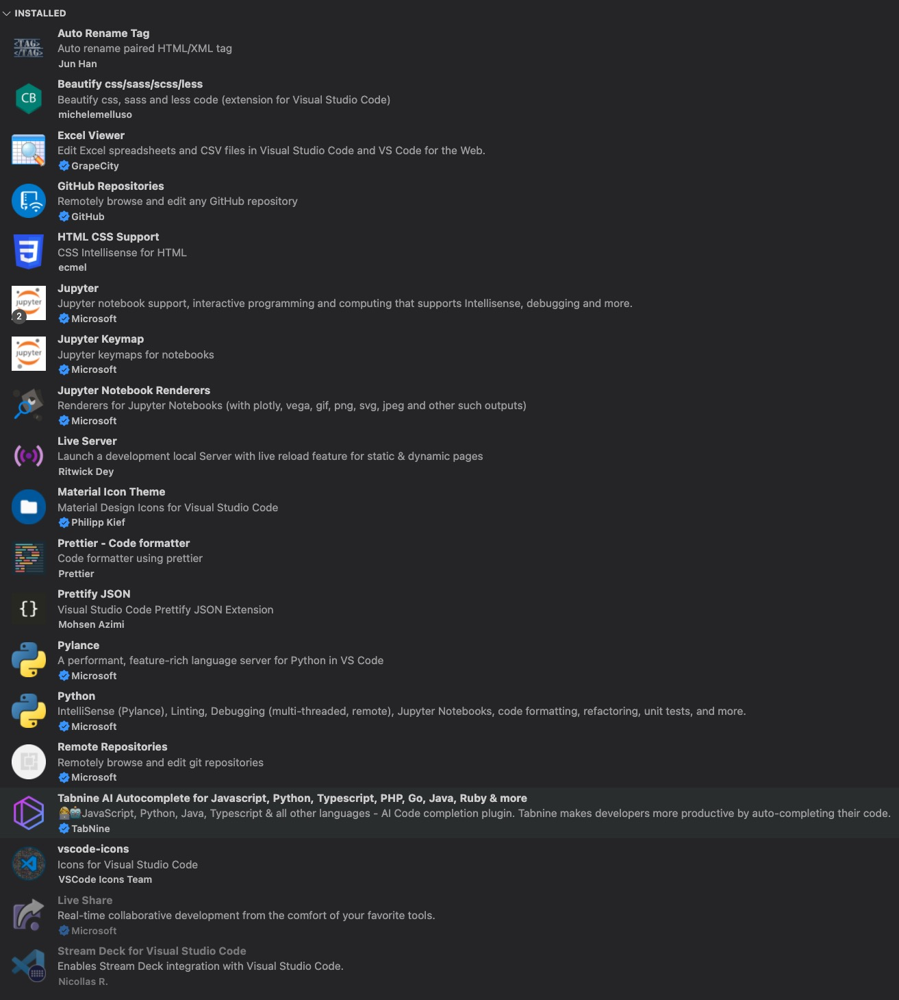

Snippets
https://code.visualstudio.com/docs/editor/userdefinedsnippets
Variables
The following variables can be used:
TM_SELECTED_TEXT The currently selected text or the empty string
TM_CURRENT_LINE The contents of the current line
TM_CURRENT_WORD The contents of the word under cursor or the empty string
TM_LINE_INDEX The zero-index based line number
TM_LINE_NUMBER The one-index based line number
TM_FILENAME The filename of the current document
TM_FILENAME_BASE The filename of the current document without its extensions
TM_DIRECTORY The directory of the current document
TM_FILEPATH The full file path of the current document
RELATIVE_FILEPATH The relative (to the opened workspace or folder) file path of the current document
CLIPBOARD The contents of your clipboard
WORKSPACE_NAME The name of the opened workspace or folder
WORKSPACE_FOLDER The path of the opened workspace or folder
CURSOR_INDEX The zero-index based cursor number
CURSOR_NUMBER The one-index based cursor number
For inserting the current date and time:
CURRENT_YEAR The current year
CURRENT_YEAR_SHORT The current year's last two digits
CURRENT_MONTH The month as two digits (example '02')
CURRENT_MONTH_NAME The full name of the month (example 'July')
CURRENT_MONTH_NAME_SHORT The short name of the month (example 'Jul')
CURRENT_DATE The day of the month as two digits (example '08')
CURRENT_DAY_NAME The name of day (example 'Monday')
CURRENT_DAY_NAME_SHORT The short name of the day (example 'Mon')
CURRENT_HOUR The current hour in 24-hour clock format
CURRENT_MINUTE The current minute as two digits
CURRENT_SECOND The current second as two digits
CURRENT_SECONDS_UNIX The number of seconds since the Unix epoch
For inserting random values:
RANDOM 6 random Base-10 digits
RANDOM_HEX 6 random Base-16 digits
UUID A Version 4 UUID
Extensions
6th July '22 - current extensions:
